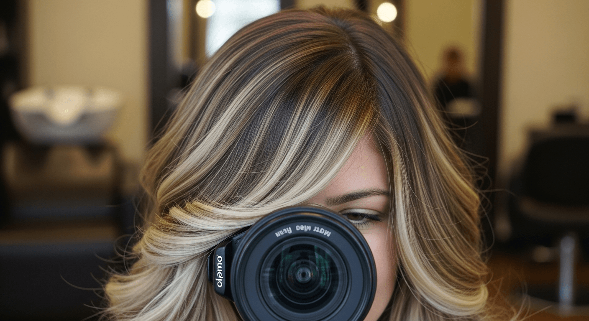
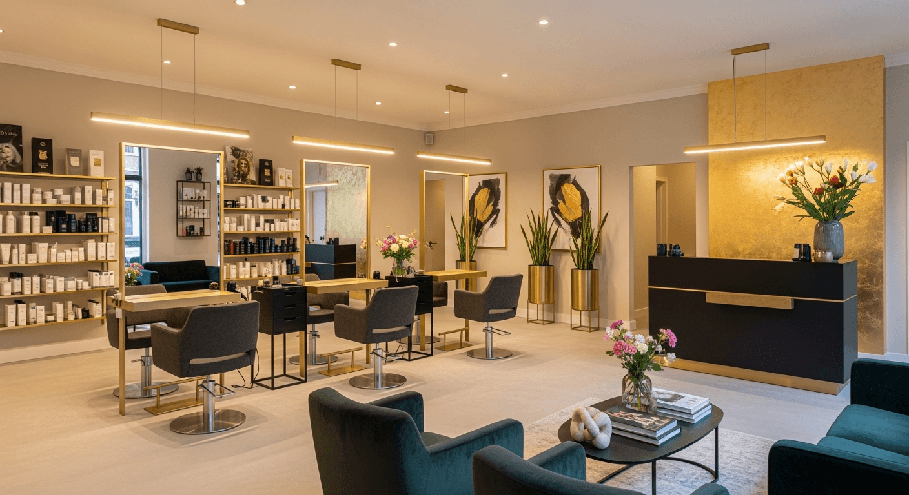

Onze Diensten
Alles wat je nodig hebt voor perfect haar, onder een dak.
Knippen & Stylen
Of je nu kiest voor een subtiele bijpuntbehandeling of een complete metamorfose — bij Hairstudio Igor ben je altijd in goede handen. Onze hairartists hebben jarenlange ervaring met alle haartypes en lengtes. Wij luisteren naar jouw wensen en geven eerlijk advies over wat het beste bij jouw gezichtsvorm en levensstijl past.
Elk bezoek begint met een persoonlijk consult. Wij bespreken wat je wilt, bekijken de conditie van je haar en stellen samen een plan op. Of het nu gaat om een stoere pixie cut, een elegante bob of lange lagen — wij knippen het tot in de perfectie.
Na het knippen wordt je haar gestyled met producten van Keune. Zo weet je precies hoe het er thuis ook uit kan zien. Wij geven je altijd tips mee voor het stylen en onderhouden van je nieuwe coupe.
- Knippen dames
- Knippen + fohnen
- Knippen + stylen
- Bijpunten knippen
- Ponyknippen
- Bruidskapsels

Kleuren & Balayage
Kleur geeft je haar leven, diepte en persoonlijkheid. Bij Hairstudio Igor zijn wij gespecialiseerd in de nieuwste kleurtechnieken. Van een natuurlijke balayage tot opvallende highlights — wij creeren een kleurresultaat dat perfect bij jou past.
Onze kleurspecialisten werken uitsluitend met Keune kleuren. Dit Nederlandse premiummerk staat bekend om zijn rijke kleurpigmenten, lange houdbaarheid en haarvriendelijke formules. Of je nu voor het eerst kleurt of al jarenlang je haar laat kleuren: wij zorgen voor een gezond en stralend resultaat.
Bij elke kleurbehandeling adviseren wij of een Olaplex behandeling geschikt is. Olaplex beschermt de haarbindingen tijdens het kleuren, waardoor je haar sterk en gezond blijft — ook na intensieve kleurbehandelingen. Het is de perfecte combinatie voor wie het beste wil voor haar haar.
- Balayage
- Highlights / Lowlights
- Volledig kleuren
- Uitgroei bijwerken
- Toning / Gloss
- Kleurcorrectie

Treatments & Olaplex
Gezond haar is de basis van elke mooie coupe. Daarom bieden wij bij Hairstudio Igor diverse haartreatments aan die je haar van binnenuit herstellen en versterken. Of je haar nu droog, beschadigd, dun of pluizig is — wij hebben een treatment die werkt.
Als officieel Olaplex verkooppunt zijn wij expert in het herstellen van beschadigd haar. Olaplex werkt op moleculair niveau: het herstelt gebroken disulfidebindingen in het haar, waardoor het weer sterk, elastisch en glanzend wordt. Het verschil is direct voelbaar na de eerste behandeling.
Naast Olaplex bieden wij ook Keune Care treatments aan. Deze behandelingen zijn speciaal ontwikkeld voor verschillende haartypen en -problemen. Van diep hydraterende maskers tot keratin treatments — wij vinden de perfecte oplossing voor jouw haar.
- Olaplex No. 1 & 2 (in-salon)
- Olaplex thuiszorgproducten
- Keune Care treatments
- Diep conditionerende maskers
- Keratin behandeling

Knippen & Scheren
Bij Hairstudio Igor zijn heren net zo welkom als dames. Sterker nog: met onze Gold Dry Night op donderdag hebben wij een speciaal moment alleen voor mannen gecreeerd. Maar ook op alle andere dagen ben je van harte welkom voor een knipbeurt of scheerbehandeling.
Onze herenkapper is gespecialiseerd in alles van klassieke coupes tot moderne fades. Of je nu een strakke undercut, een casual look of een traditionele snit wilt — wij knippen het tot in de perfectie. Bij elke knipbeurt krijg je ook een wasbeurt en styling met Keune producten.
Naast knippen bieden wij ook professioneel scheren en baardverzorging aan. Met een hot towel, scherp mes en de juiste producten zorgen wij voor een gladde, irritatievrije scheerbeurt. Daarnaast kunnen wij je baard bijknippen, vormgeven en onderhouden.
- Heren knippen
- Knippen + wassen + stylen
- Baard trimmen / vormgeven
- Scheren (hot towel)
- Combi knippen + baard
- Gold Dry Night (donderdag)

Gold Dry Night
Elke donderdagavond openen wij onze deuren exclusief voor heren. De Gold Dry Night is een ontspannen avond waarop je zonder afspraak kunt binnenlopen voor een knipbeurt, baardverzorging of gewoon een goed gesprek met een drankje erbij.
Het concept is simpel: geen haast, geen vrouwenbladen, geen drukte. Gewoon een relaxte avond met mannenverzorging op zijn best. Onze stylisten nemen de tijd voor je en zorgen dat je de salon verlaat met een frisse look en een goed gevoel.
De Gold Dry Night is inmiddels een traditie in Woerden. Mannen van alle leeftijden komen elke week terug. Sommigen voor de knipbeurt, anderen voor de sfeer — en veel voor allebei.
Reserveer Jouw Plek
Keune Haircosmetics
Hairstudio Igor is officieel Keune partner. Dat betekent dat wij alle behandelingen uitvoeren met Keune producten — van kleur tot styling, van verzorging tot afwerking.
Keune is een Nederlands familiebedrijf dat al sinds 1922 professionele haarproducten ontwikkelt. Het merk staat bekend om innovatie, duurzaamheid en topkwaliteit. Wij zijn trots om met dit merk te werken en kunnen je uitgebreid adviseren over de beste producten voor jouw haartype.
Alle producten die wij in de salon gebruiken zijn ook te koop voor thuisgebruik. Zo kun je het salonresultaat elke dag thuis ervaren.
Wil je een afspraak maken?
Neem contact met ons op via telefoon, WhatsApp of het contactformulier. Wij helpen je graag!
Afspraak Maken 0348 499 861